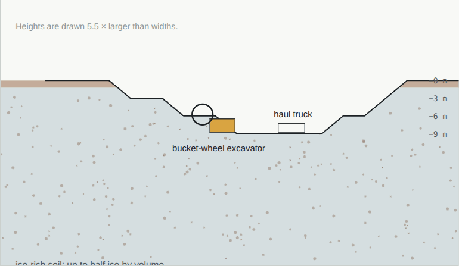

Water
Mined from ice, cleaned of its salts, then used again and again. Water is drinking, washing and farming, and split apart it is also oxygen to breathe and rocket fuel.
Mining itTwo ways to get water out of the ground
Where it is: as ice, at the poles and under the ground of the middle latitudes. In Arcadia Planitia radar shows clean ice tens of metres thick close to the surface. See resources.
Dig and bake. Dig ice-rich soil and bake the water out in a sealed oven, catching the vapour.
Melt a well. Drill into clean ice and melt a pool deep down, then pump it up: a "Rodwell", as the South Pole station has used for its water for years.
It takes energy: warming a tonne of ice from −60 °C and melting it takes about 130 kWh (our sum: 2.1 kJ per kg and degree to warm it, 334 kJ per kg to melt it).

Cleaning and recyclingEvery drop used again
Cleaning. Mars soil carries perchlorate salts, about half a percent at the Phoenix landing site, harmful to people; they are taken out by reverse osmosis or ion exchange before anyone drinks.
Recycling. The International Space Station now recovers 98% of its water, from washing, breath and urine. A Mars house recycles the same way, so the ice mine only tops it up, and plants and people share one loop.
Digging the Pentagon brings up about 1.5 million tonnes of ice: water, air and fuel for decades. The lake on L2 is also the house's water reserve, and every drop is recycled. The ice mine, in the design plan →
SourcesWhere the numbers come from
- A. M. Bramson and others (2015), Widespread excess ice in Arcadia Planitia, Mars. Geophysical Research Letters 42, 6566. doi:10.1002/2015GL064844
- M. H. Hecht and others (2009), Detection of perchlorate and the soluble chemistry of martian soil at the Phoenix lander site. Science 325, 64. doi:10.1126/science.1172466
- NASA (2023): the Space Station's life support reaches 98% water recovery.
- The energy to melt ice is our sum from the heat capacity of ice and its heat of melting, shown above.